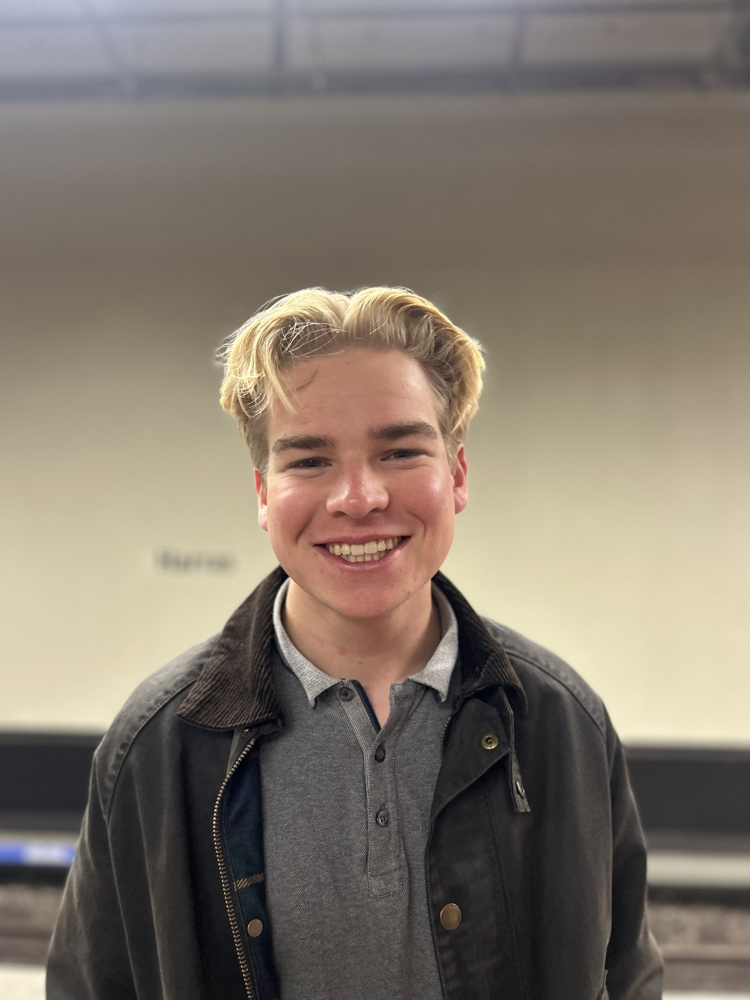
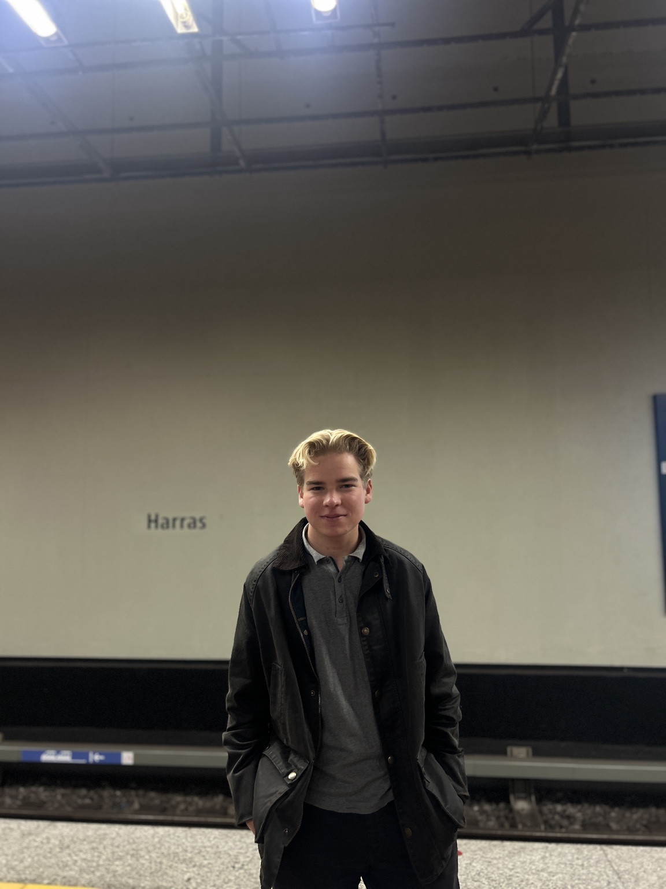

Die Menschen hinter Erlebnis Egerland
Adrian
Wenisch
18 Jahre · im Projektjahr 2026
Meine Aufgaben
- Recherche
- Sponsoring
- Zeitzeugengespräche
- Interviews
Meine Motivation
Warum ich dabei bin
Ich habe mich für das P-Seminar „Erlebnis Egerland“ entschieden, weil ich mich sehr für Geschichte interessiere und gerne mehr über die Vergangenheit unserer Region erfahren möchte.
Auch durch meine eigene Familiengeschichte habe ich einen persönlichen Bezug zum Thema, da mein Opa aus Böhmen vertrieben wurde. Deshalb finde ich es besonders spannend, mich mit der Geschichte des Egerlandes, den Menschen und ihren Erlebnissen auseinanderzusetzen.
Ich möchte durch das Seminar mehr über diese Zeit erfahren und dazu beitragen, die Geschichte und Erinnerungen für andere zugänglich zu machen.
